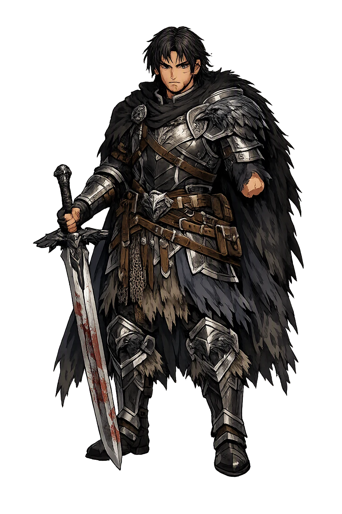
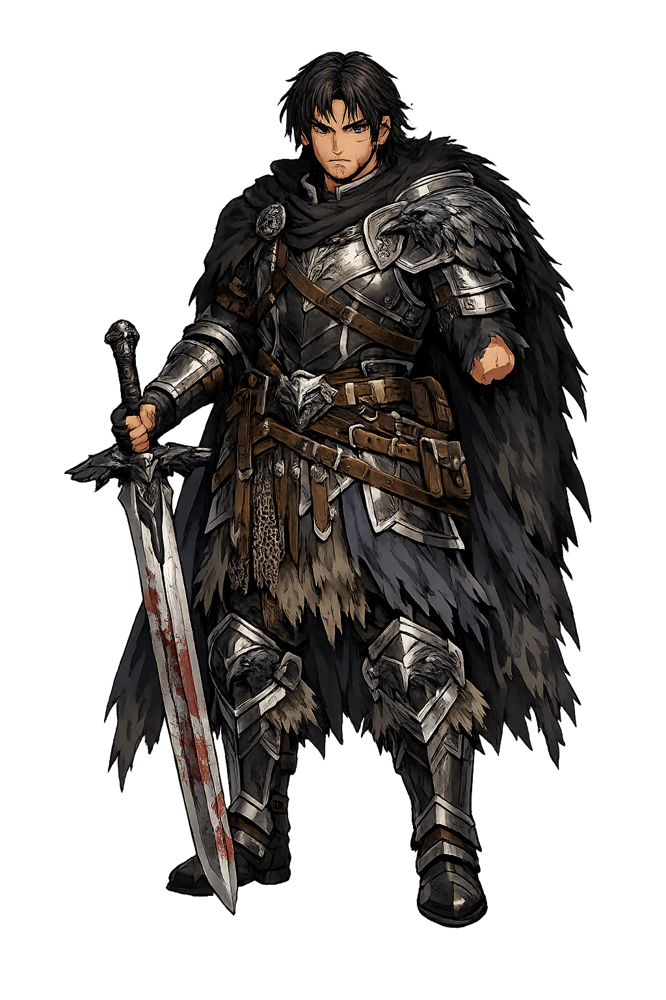

Unicode restoration and ASCII comparison
Bedwyr
The name survives in scholarly transliteration. Bedwyr is the standard Celtic romanisation, documented in academic sources — “Unknown”. Because the spelling uses only Latin letters, the form is the same in both ASCII and Unicode.
No indigenous writing system is securely attested for individual celtic names. The form shown is a modern scholarly transliteration.
bedwyr
The plain bedwyr form is identical to the Unicode restoration. Because this name is already written in Latin letters, no diacritics, stress, or script information were lost — only capitalization differs.
Bedwyr
The Unicode restoration does not need to recover lost marks for Bedwyr. Its value is canonical spelling and consistent cataloguing, not the reconstruction of erased orthography. The domain is readable as-is to both DNS and humanity.
Bedwyr.com → bedwyr.com
The non-ASCII characters in Bedwyr are encoded while the ASCII remains visible. To the DNS, it is Punycode. To humanity, it is Bedwyr.
How Bedwyr is preserved in writing
No indigenous writing system is securely attested for individual celtic names. The form shown is a modern scholarly transliteration.
Contribute scholarly provenance →Owned, ideal, and ASCII forms of Bedwyr
Bedwyr
The full Unicode restoration. bedwyr.com is not in the PuniCodex collection — it is watched for release; if it drops, this temple upgrades to an owned flagship.
How Bedwyr was spoken
The One-Handed Spearman of Arthur's War-Band
Bedwyr son of Bedrawc is the great companion-hero of the oldest Welsh Arthurian tradition: the warrior who never shrank from any enterprise on which [[kai|Cei]] was bound, the one-handed spearman whose single thrust made a wound equal to nine, and the one man the triads crown with a battle-diadem above the three they name. Before French romance gave Arthur his Lancelot, the Welsh tradition gave him Bedwyr.
His one strange property in Culhwch ac Olwen: his lance would produce a wound equal to those of nine opposing lances — one arm doing the work of nine.
The triad of the Three Battle-Diademed names Drystan, Hueil, and Cei — then adds that one was battle-diademed above all three: Bedwyr son of Bedrawc.
In the hunting of Twrch Trwyth, the greatest boar-hunt in Welsh literature, Bedwyr led Cavall — Arthur's own hound.
On the summit of Pumlumon he and Cei plucked the beard of Dillus the Bearded alive with wooden tweezers — for dead, the bristles would have been brittle, and no other leash could hold the hound Drudwyn.
Stories of Bedwyr
Bedwyr belongs to the oldest stratum of Arthurian tradition: the Welsh heroic material that predates Geoffrey of Monmouth and the whole romance edifice. His dossier is compact and precise — a poem's roster, a tale's three great episodes, two triads — and across all of it one fact never varies: where Cei goes, Bedwyr goes, and the one-handed man is never the lesser of the pair.
The poem known from its opening line as Pa gŵr yv y porthaur? — 'What man is the gatekeeper?' — is the oldest Arthurian poem in Welsh: preserved in the thirteenth-century Black Book of Carmarthen, and itself composed perhaps centuries earlier. In it Arthur, halted at a fortress gate by the porter Glewlwyd Gafaelfawr, recites the roll of his companions to win entry, and Bedwyr stands in that roll beside Cei and Arthur's son Llacheu — already, in the earliest witness, one of the names Arthur speaks to prove his company.
The poem is fragmentary — it breaks off mid-recitation — but its testimony matters beyond its length: it shows a Welsh Arthurian war-band whose heroes had their own deeds long before Geoffrey of Monmouth drew Arthur into Latin history, and Bedwyr is fixed in that founding generation.
Culhwch ac Olwen, the earliest full Arthurian prose tale, gives Bedwyr his formal introduction when Arthur calls the companions for the quest of Olwen: Arthur called Bedwyr, 'who never shrank from any enterprise upon which Kai was bound. None was equal to him in swiftness throughout this Island except Arthur and Drych Ail Kibddar. And although he was one-handed, three warriors could not shed blood faster than he on the field of battle. Another property he had: his lance would produce a wound equal to those of nine opposing lances.'
The great court-list earlier in the tale quietly extends the household: Amren son of Bedwyr stands among Arthur's huntsmen, and Eneuawc daughter of Bedwyr among the golden-chained maidens of the Island — the one-handed spearman with a son and daughter woven into the fabric of the court.
No leash in the world could hold Drudwyn, the whelp of Greid son of Eri, save one made from the beard of Dillus Farfawc — and the beard was useless unless plucked from him alive with wooden tweezers, for once dead the bristles would turn brittle. As Cei and Bedwyr sat on a beacon cairn on the summit of Pumlumon, 'in the highest wind that ever was in the world', they spied smoke that did not bend with the wind, and found the greatest robber who ever fled from Arthur scorching a wild boar at his fire.
They let him eat his fill and sleep; they shaped the wooden tweezers while he slept; Cei dug a pit beneath him, struck him into it, and together they plucked the beard clean and slew him. The leash was made and delivered to Arthur at Celli Wic — and Arthur answered with an englyn mocking Cei's deed, at which Cei's wrath was so great that the warriors of the Island could scarcely make peace between them, and Cei never again came to Arthur's aid. The episode that shows Bedwyr and Cei at their closest is the tale's own explanation of their company's end.
For the sword of Gwrnach the Giant, from whose castle no guest had ever returned alive, Cei went in alone under a false craft — the best burnisher of swords in the world — and won Bedwyr admission by a sign: the head of his lance would leave its shaft, draw blood from the wind, and settle on its shaft again. Inside, Cei polished the giant's sword, talked him out of his scabbard, and struck off his head with his own blade; the company despoiled the castle and bore the sword to Arthur's court by the beginning of the year.
In Ireland, for the cauldron of Diwrnach Wyddel, the embassy's request was refused outright — and then Bedwyr arose and seized the cauldron and set it on the back of Hygwyd, Arthur's cauldron-bearer, while Llenlleawg Wyddel caught up Caledfwlch, and they slew Diwrnach and his company and fought their way back to the ship Prydwen, carrying the cauldron off full of Irish treasure. The two episodes are the pair's whole method: Cei's cunning at the gate, Bedwyr's hand on the prize.
The Welsh triads keep the tradition's compressed memory, and they name Bedwyr twice — both times beside Cei. The triad of the Three Battle-Diademed of the Island of Britain names Drystan son of Tallwch, Hueil son of Caw, and Cei son of Cynyr — and then adds: and one was battle-diademed above all three of them, and that was Bedwyr son of Bedrawc. In the tradition's own arithmetic, the one-handed man outranks the three crowned warriors it had just named.
The second naming is the triad's own joke at the war-band's expense. In the triad of the Three Powerful Swineherds, Drystan son of Tallwch kept the swine of March son of Meirchyawn while the swineherd carried a message to Essyllt — and Arthur and March and Cei and Bedwyr were there, all four, yet did not succeed in getting so much as one pigling, neither by force, nor by deception, nor by stealth. The greatest names in the Island, together, defeated by one watchful man and a herd of pigs.
Geoffrey of Monmouth, drawing the Welsh heroes into his Latin history of the kings of Britain (c. 1136), makes Bedwyr into Beduerus: Arthur's cupbearer and constable of Normandy, one of the two companions — with Caius the seneschal — closest to the king. In the war against the Roman emperor Lucius Tiberius, Beduerus falls in the fighting before Soissons, struck down as the British line engages, and Arthur has him carried to Bayeux in Neustria, a city his own ancestors had built, and buried there with great lamentation.
Geoffrey's account is pseudo-history, not Welsh tradition — but it fixed Bedwyr in the Latin chronicle line that Wace and Layamon would follow, and it is the hinge on which the Welsh Bedwyr turns into the Bedivere of European romance: the companion who dies in Arthur's service, far from home, mourned by the king he served.
Bedwyr is the tradition's proof that loss is not the measure of a man. The texts hand him to us already one-handed — the wound is never narrated, never mourned, never explained — and then spend every remaining line insisting on the arithmetic of what is left: one arm that sheds blood faster than three warriors, one lance that wounds like nine, one diadem above the three crowned. The silence about the missing hand is the point: the Welsh tradition does not tell a story about a maimed warrior; it tells stories about the swiftest, surest companion Arthur has, who happens to fight with one arm.
Enter Extended Lore